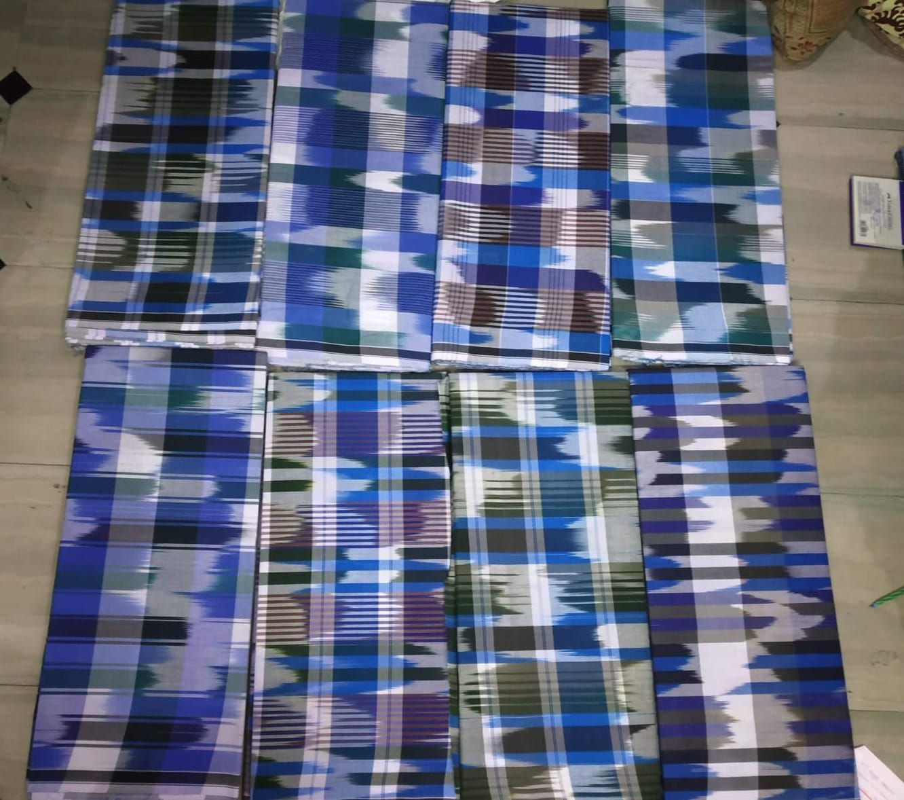

Weavers and textile producers
Share the products, techniques and sourcing capabilities your actual business can support.
If you operate a textile, weaving or lungi-supply business connected with the Podaturpet region, tell us about your work and start a conversation about a possible sourcing or listing opportunity.

Share the products, techniques and sourcing capabilities your actual business can support.
Explain your product categories, service area and the type of buyer enquiries you welcome.
Tell us about textile trading, finishing, packing or other genuine local business activities.
For a supplier introduction or advertising enquiry, share your business location, product range and photographs you have permission to publish. Tell us whether you want a business listing, a product promotion or a buyer introduction. We will discuss placement, timing and any charges before publication.
This form prepares a WhatsApp message. It does not create a public listing or guarantee approval, verification or customer enquiries.